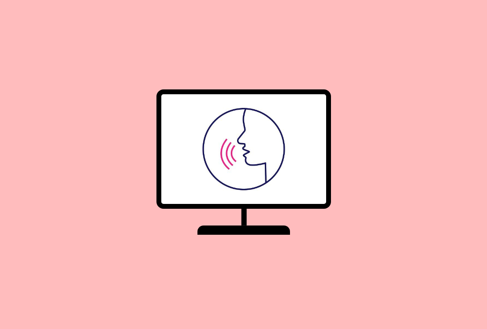

Introduction
Research in the form of semi-structured interviews with speech therapists and experts in the field of teaching speech to the hearing impaired was conducted to understand the problems that hearing impairment pose in learning speech and the shortcomings of the existing market solutions. Visits were made to schools for the hearing impaired children, to understand how the process of learning takes place in these institutions. The questions asked in the interviews, mainly focus on the methods and challenges that the therapists, as well as the children, face in the speech learning process. Following are the predetermined questions that were asked during these interviews:
Questionnaire